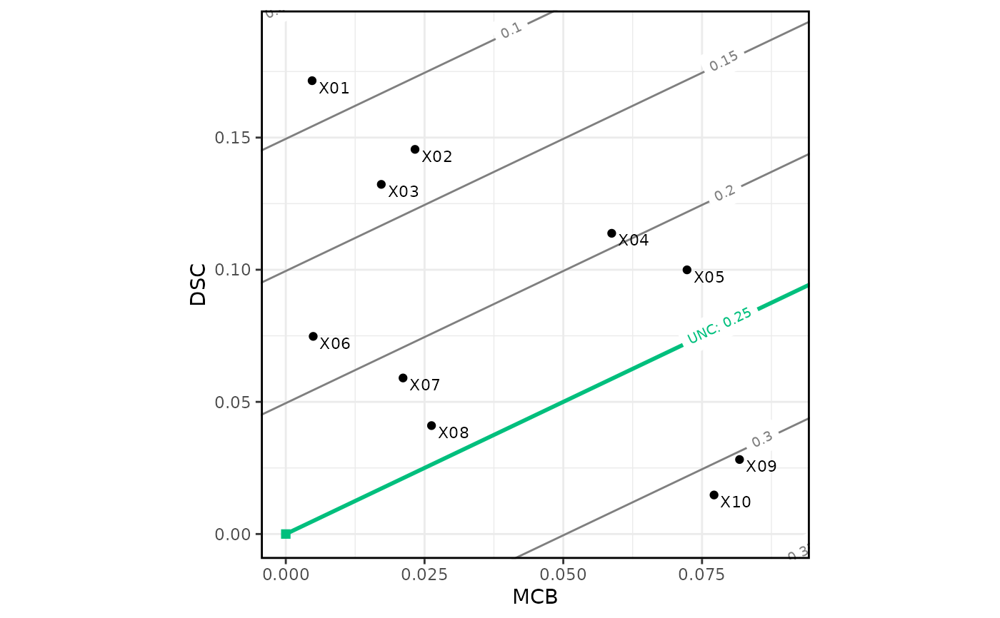

A score decomposition splits the mean score into the three components of miscalibration (MCB), discrimination (DSC), and uncertainty (UNC). Plotting the DSC component against the MCB component allows for a quick visual inspection of predictive performance for many forecasting methods.
Arguments
- x
A data frame, list, matrix, or other object that can be coerced to a tibble. Contains numeric forecasts.
- y
A numeric vector of observations. If missing, a column with name "y" must be present in the tibble coerced from
x.- score
A string specifying the score function. One of:
"Brier_score"(default),"log_score","MR_score".- ...
Unused.
- r
A reference triptych_mcbdsc object whose attributes are used for casting.
Value
A triptych_mcbdsc object, that is a vctrs_vctr subclass, and has
a length equal to number of forecasting methods supplied in x. Each entry
is named according to the corresponding forecasting method,
and contains a list of named objects:
estimate: A data frame of the score decomposition.region: An empty list. Adding confidence regions is not yet supported.x: The numeric vector of original forecasts.
Access is most convenient through estimates(), regions(), and forecasts().
See also
Accessors: estimates(), regions(), forecasts(), observations()
Visualization: plot.triptych_mcbdsc(), autoplot.triptych_mcbdsc()
Examples
data(ex_binary, package = "triptych")
md <- mcbdsc(ex_binary)
md
#> <triptych_mcbdsc[10]>
#> X01 X02 X03 X04 X05
#> <named list[3]> <named list[3]> <named list[3]> <named list[3]> <named list[3]>
#> X06 X07 X08 X09 X10
#> <named list[3]> <named list[3]> <named list[3]> <named list[3]> <named list[3]>
autoplot(md)

estimates(md)
#> # A tibble: 10 × 5
#> forecast mean_score MCB DSC UNC
#> <chr> <dbl> <dbl> <dbl> <dbl>
#> 1 X01 0.0827 0.00474 0.172 0.250
#> 2 X02 0.127 0.0233 0.146 0.250
#> 3 X03 0.134 0.0172 0.132 0.250
#> 4 X04 0.194 0.0587 0.114 0.250
#> 5 X05 0.222 0.0723 0.100 0.250
#> 6 X06 0.180 0.00494 0.0748 0.250
#> 7 X07 0.212 0.0211 0.0590 0.250
#> 8 X08 0.235 0.0263 0.0410 0.250
#> 9 X09 0.303 0.0818 0.0282 0.250
#> 10 X10 0.312 0.0772 0.0148 0.250